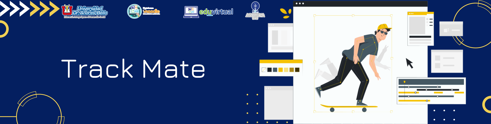
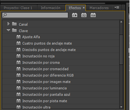

Efectos de Videos, Títulos, Track Mate, Speed Motion
3. Track Mate
Contenido
Este es un efecto muy usado para animaciones o transiciones en Adobe Premiere, que ha ido cambiando la manera de insertarlo en el proyecto. Una pista mate aplica transparencia en un video, para asignarle de video compuesta (cualquier imagen). Suele estar creado con los colores blanco y negro. Al aplicar el efecto luminancia sobre este, el negro será el que se convierta en transparente, mientras que, si el efecto aplicado es el Alpha, será el blanco el que se vuelva transparente.
La palabra "mate" proviene de efectos especiales de fotografía, cine y teatro. Acoplar una imagen significa combinar varias imágenes en una sola. En películas y fotografías antes de la manipulación de la imagen digital, los profesionales usaron las técnicas de esteras físicas para bloquear y exponer de manera selectiva ciertas partes de la película mientras protegían otras, combinando las exposiciones para combinar imágenes y crear un compuesto.
Transiciones mate en Premiere Pro
En Adobe Premiere Pro colocamos los dos clips de video en dos pistas de video separadas. (Como V1 y V2.)
Track Mate
Incrustación por pista mate, permite crear una máscara de vídeo usando varios elementos, este efecto lo puede encontrar en Efectos/ Claves/ Incrustación por pista mate.

Obra publicada con Licencia Creative Commons Reconocimiento Compartir igual 4.0